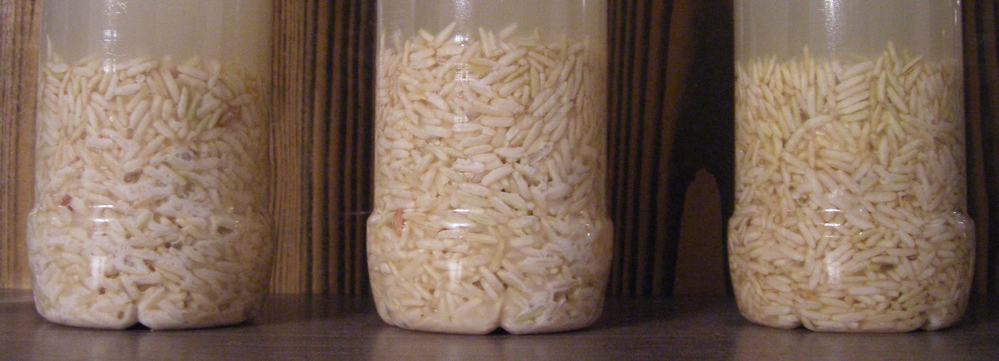

Возможно, вы помните статью "Механизм материализации мысли", которая выходила в конце ноября. Если коротко, то там говорилось о том, что помимо сознательных действий, мы еще делаем много бессознательных, стремящихся реализовать все наши ожидания. Но, как выяснилось, есть и прямое влияние мысли на материю! Причем выяснилось в рамках научного подхода и было экспериментально доказано.
Возможно, вы уже смотрели документальный фильм "Вода" (если нет, очень рекомендую), в котором рассказывалось и показывалось, как слово влияет на структуру воды (а следовательно, и структуру всего, в чем есть вода). Однако, фильм есть фильм, и совершенно естественно, что в ходе обсуждения этой темы в LJ, в общественном мнении возникли сомнения на этот счет. Но как практик, я понимаю, что одно дело личный опыт, и совершенно другое - размышления о нем, какими бы логичным и аргументированными они ни были. Поэтому я решаю просто взять и проверить - действительно ли это работает? Ведь... можете себе представить, что значит ответ на этот вопрос, есть ли прямое влияние мысли на материю?
Итак, 29 декабря 2007 года я запустил свой собственнй эксперимент "Вода". Цель эксперимента - обнаружить, существует ли влияние слов и эмоций на воду и органические вещества. Планируемая продолжительность эксперимента - 31 день.
Суть эксперимента в следующем - взято три группы бутылок с разным составом (питьевая вода, вода с сахаром, вода с рисом). В каждой группе по 3 бутылки, одной из которых раз в день я говорю негативные слова, другой - позитивные, а третья используется как контрольная бутылка и с ней не делается ничего. Попадание пыли и грязи в бутылки исключено, перемещения бутылок и прикосновения к ним не совершаются. Если верить эксперименту Масару Эмото, изменения в воде с рисом можно будет увидеть без помощи микроскопа (благодаря реакции риса).
Первую неделю ничего не происходило.
На 9-й день эксперимента (6 января 2008 г.) появились первые различия: цвет воды в бутылках, а вернее ее мутность... стала немного отличаться. Эксперимент начал становиться интересным...
И на 11-й день (8 января 2008 г.) я вдруг заметил уже весьма конкретные отличия, видимые невооруженным глазом и... носом :)
Фото на 11 день эксперимента

Эксперимент успешно завершился. Разница между содержимым контрольной бутылки, принимающей позитив и принимающей негатив - очевидна (детальные фото ниже).
На 23-й день эксперимента у меня уже не получается пообщаться с водой в бутылках, и это длится далее каждый день (кроме 27-го дня) вплоть до окончания эксперимента и еще несколько дней. На 33-й день я наконец-то оказался дома и снял финальный результат.
Фото на 33-й день эксперимента (после 8 пропусков общения с бутылками)
Мы видим, что бутылка с водой, принимающей негатив - стала светлее, а принимающая позитив - темнее! ...То есть ситуация выглядит так, словно отсутствие внимания к воде в бутылках запустило в ней обратные процессы!
Однако, это уже останется для нас только предположением, так как за невозможностью продолжать эксперимент, я снял бутылки. Напоследок я сделал дополнительное фото воды через горлышко. Там видны четкие следы первой тенденции. Запах так же значительно отличался (но приятным не был нигде :))
Завершение эксперимента. Вид сверху (через горлышко бутылки)
(Слева - контрольная бутылка, посередине - принимающая негатив, справа - принимающая позитив.)
...Что же касаемо бутылок с другим содержимым (с сахаром и неоткрытые просто с водой), то в них изменений я не заметил. Вероятно, если они есть, их можно обнаружить только с помощью специального оборудования (заморозить и сфотографировать кристаллы воды), однако у меня его дома нет :) Впрочем, изменений в воде с рисом лично для меня вполне достаточно, как собственного убедительного опыта, подтверждающего тот факт, что слово влияет на структуру воды и/или материю находящуюся в ней (соответственно, есть доверие и к фактам в док.фильме "Великая тайна воды"). Количество раз, необходимое для оказания влияния, эффект которого будет заметен (в моем случае) - это 11 дней по 1 коммуникации в день, а может быть, даже и меньше.
Старт
Рис в контрольной бутылке начал покрываться белой слизью, в принимающей негатив бутылке тоже, но несколько меньше, а в принимающей позитив... - остался чистым!
(Слева - контрольная бутылка, посередине - принимающая негатив, справа - принимающая позитив.)
Завершение эксперимента
Однако, должен признать, что продолжительность воздействия на бутылки была все-таки не запланированные 31 день, а только 22 дня, т.к. в связи с неотложными делами у меня не оказалось возможности попасть домой и пообщаться с бутылками.... И это показало один весьма интересный эффект, видимый на сравнении фото 18-го дня и финального фото, сделанного на 33-й день. Итак...
Фото на 18-й день эксперимента
(Слева - контрольная бутылка, посередине - принимающая негатив, справа - принимающая позитив.)
Как видим, бутылка, принимающая негатив (посередине) темнее других.
А дальше самое интересное...
(Слева - контрольная бутылка, посередине - принимающая негатив, справа - принимающая позитив.)
Выводы
P.S. Кстати, аналогичный эксперимент в России уже был. И, как выяснилось позже, не один.
Егор Булыгин,
31.01.2008 г.
ремейк статьи от 3.06.2009 г.